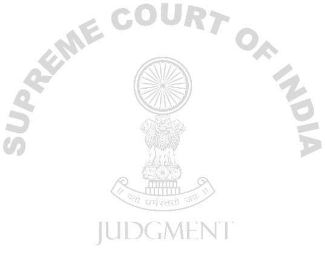

IN THE SUPREME COURT OF INDIA
REPORTABLE
IN THE SUPREME COURT OF INDIA
CRIMINAL APPELLATE JURISDICTION
CRIMINAL APPEAL No. 457 OF 2007
SAYAJI HANMAT BANKAR... Appellant(s) Versus

1.
for one year. 2.
The brief facts leading to case are as under:
On 18.5.1998 at about 9 p.m., appellant-accused Sayaji Hanmat Bankar came home under the influence of liquor and abused his wife deceased-Suman. There was petty quarrel between the appellant and the deceased Suman and in that quarrel the appellant hit her left knee with a water pot made of brass and thereafter threw a burning kerosene
lamp upon her. At that time, she was wearing nylon sari which immediately caught fire and she was engulfed by flames. The deceased was immediately taken to the hospital by her parents where her dying declaration was recorded. The medical report of the doctor showed that the deceased was burnt to the extent of 70%. A dying declaration was recorded. During investigation the deceased gave the above version. In her dying declaration, it has also been

3.
4.
and also gone through the record. 5. In our view, from the evidence on record, it does not appear that the intention on the part of the accused was to cause death or such bodily injury as would have resulted in the death of his wife. There would be much more activity on the part of the accused if his intention was to commit the murder of his wife. It seems that there was a fight as soon as he came to the house under the drunken state and in
the fight, he first hit her left knee with a water pot and thereafter, threw kerosene lamp on her. It is obvious from the evidence that this was done suddenly in the heat of passion. If there was any intention to commit her murder, as
mentioned in Section 299 IPC, there would have been much other acts like pouring kerosene on the deceased etc. on the part of the accused. 6.

advantage or acted in a cruel or unusual manner”
7. It is clear from the reading of aforesaid Exception 4 that if the act is done without premeditation in a sudden fight or in the heat of passion upon a sudden quarrel and if the offender does not take any undue advantage or act in a cruel or unusual manner, then Exception 4 will be attracted.
8. We have gone through the evidence carefully. It seems that as soon as the accused entered the house, there appeared to be some quarrel with his wife and in that fight first, he threw water pot and thereafter a kerosene lamp. The burning seems to be more out of the fact that unfortunately at that time, the lady was wearing nylon sari. Had she not been wearing a nylon sari, it is

9.
10. appellant that the appellant was taken into custody on 29.5.1998 and was never granted bail by the High Court and he has already undergone 13 years of sentence. 11. In that view of the matter, the accused-appellant is directed to be released from the jail forthwith unless he is required in any other case. 12. The appeal is allowed partly to the extent indicated above.
...................J.
(V.S.SIRPURKAR)
....................J.
(T.S.THAKUR)
New Delhi, July 13, 2011.